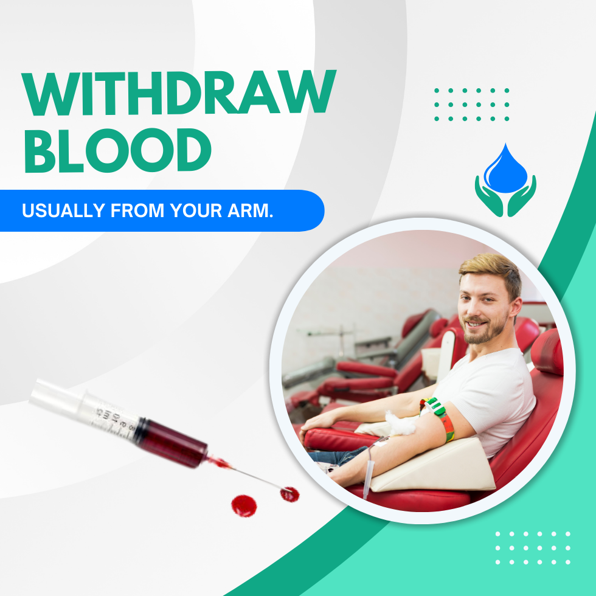
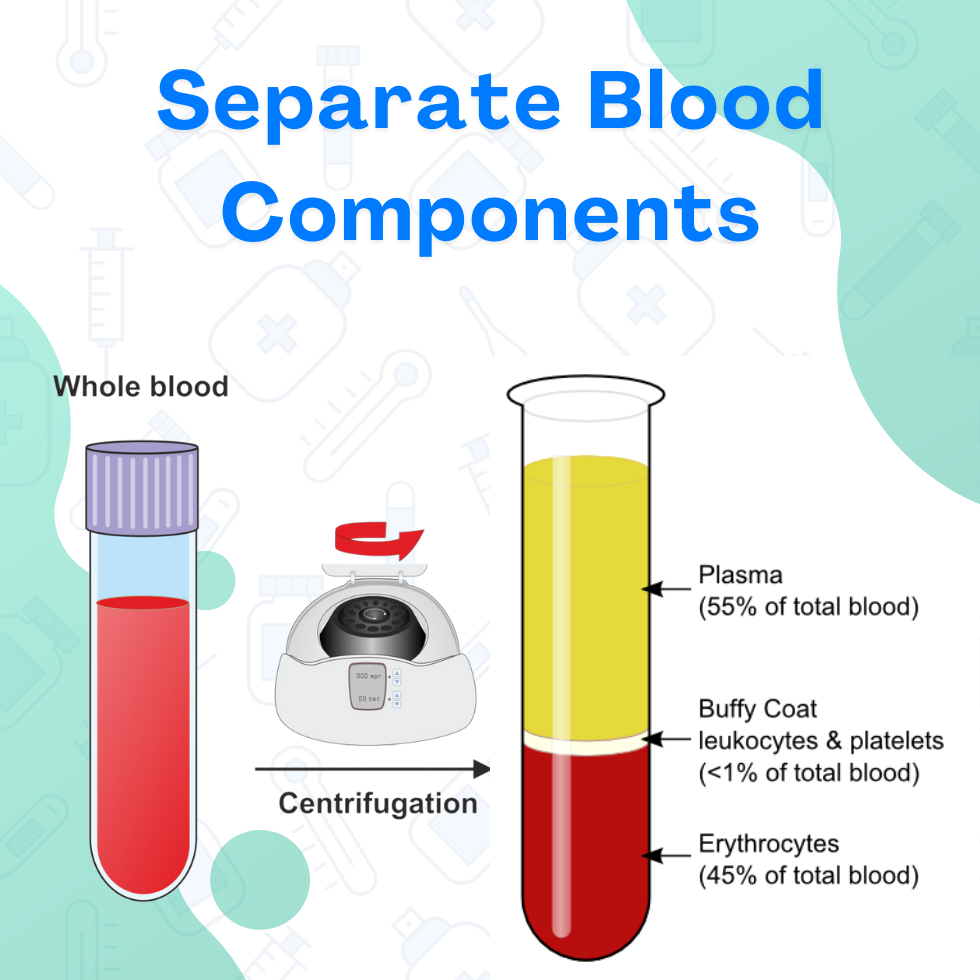
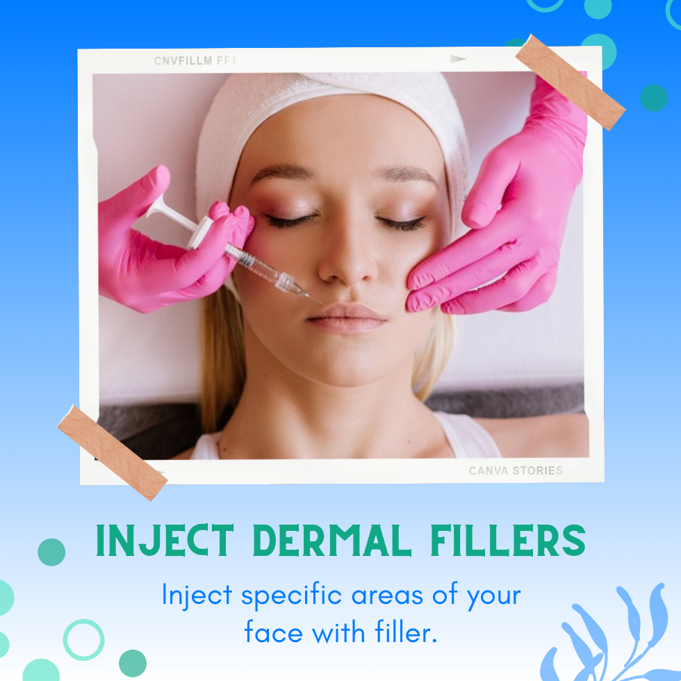
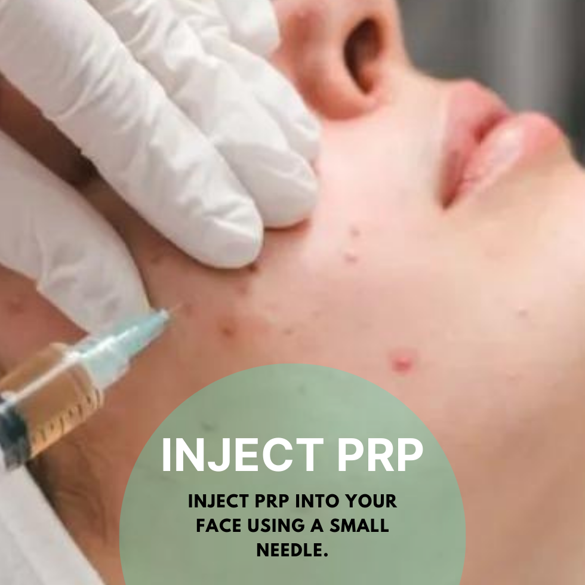

Advanced Aesthetic Treatment and Training Centers
MAKE AN APPOINTMENT MEDICAL TRAINING START LOOKING YOUR BEST NOWA lot of our patients ask us, what is a Vampire Facelift and how much does a Vampire Facelift or PRP facelift cost? A Vampire Facelift (PRP facelift) revitalizes the skin on your face without surgery. We inject platelet-rich plasma (PRP) with hyaluronic acid filler to contour your face, reduce wrinkles and plump skin. There are minimal side effects like bruising, swelling and tenderness. This procedure is an alternative to a surgical facelift. The cost of a Vampire Facelift typically starts at $1,200 or can be financed for around $69 per month. Right now, Soni Medical Center is offering a special price ON Vampire Facelifts and Vampire Facials. You can get Dr Soni to provide a Vampire Facelift or Facial for $899. Call us at (833) 313-STEM7836
Vampire Facelift, or PRP facelift, is an alternative to a surgical facelift. The procedure can take up to 2 hours.
1
Numbing cream will prevent pain from the injection while the procedure is performed.
2
We withdraw a small amount of blood, like when giving a blood sample, to extract your body's natural growth factors.
3
Your blood is put into a centrifuge which will spin it at high speed to separate the parts.
4
The dermal fillers provide instant volume corrections, and the PRP component helps stimulate more long-term regeneration of healthier, firmer skin.
5
We use a micro-needle to inject the PRP into your face after the numbing agent is fully working to minimize bruising from the injection.
A Vampire Facelift® is a non-surgical cosmetic procedure designed to rejuvenate facial skin. This innovative treatment involves the use of injections containing platelet-rich plasma (PRP) derived from your own blood, combined with a temporary dermal filler made of hyaluronic acid. The procedure gets its intriguing name from the use of blood as a key component in the rejuvenation process. Many people experience immediate visible improvements in their skin'’'s appearance, noticing a more youthful and refreshed look right after the PRP facelift.
Platelet-rich plasma (PRP) is a component of your blood that plays a crucial role in healing and regeneration. Plasma, the liquid portion of your blood, carries various cells, including platelets. Platelets are specialized cells that contain growth factors essential for tissue repair and help your blood clot to prevent bleeding. PRP is a concentrated form of blood that consists primarily of these growth factors, platelets, and plasma, excluding other blood components.
We will collect PRP by drawing your blood and putting it through a centrifuge. This will spin your blood at high speeds to separate your blood into different components:
Once your blood finishes spinning in the centrifuge, we will remove the platelet-rich plasma component to be injected into your face. There are products like the X-Shot™ that can be added to the PRP that provide longer lasting results.
A Vampire Facelift is an alternative treatment to a surgical facelift. Platelet-rich plasma is known to:
A PRP facelift may help:
A Vampire Facelift (PRP facelift) combines injections of platelet-rich plasma with hyaluronic acid filler. During a vampire facial, we spread PRP over your face. Then we use micro-needling or tiny pricks that help your face absorb the plasma. Vampire facials target issues on the surface of your skin, including:
Before a Vampire Facelift (PRP facelift), you'll have a consultation with Dr. Soni. He'll ask about your goals and your health history to see if you're a good candidate for the procedure. A PRP facelift isn't recommended if you:
If you're a good candidate for a PRP facelift, Dr. Soni will examine your skin and talk about what you want to achieve from the procedure. If you decide to go ahead with a PRP facelift, he may ask you to:
During a Vampire Facelift procedure, we will:
A PRP facelift usually takes one to two hours.
You won't feel pain during a Vampire Facelift because we will numb your skin. You may feel light to mild pain once the numbing cream wears off.
After a PRP facelift, you may experience mild discomfort and bruising for a couple of days, up to a week. You should be able to go about your day with caution after the procedure.
You can apply ice packs wrapped in a towel to your face as needed to reduce swelling. You can take over-the-counter pain relievers as directed. When you go to bed, elevate your head and try to sleep on your back. We will give you specific instructions to care for your skin after the procedure.
Benefits of a Vampire Facelift (PRP facelift) include:
Studies are limited when it comes to calculating the success of vampire facelifts. The benefits of PRP may promote improvement in your skin texture and it works as a treatment to reduce wrinkles.
If you choose to try a PRP facelift, be sure to consult with a board-certified plastic surgeon or dermatologist about the benefits and risks.
Side effects of a PRP facelift could include:
Rarely, you may experience a reaction to the hyaluronic acid filler, which could include:
A more serious risk is that a provider could inject filler into a blood vessel. This can cause tissue in the area to die.
Look for an experienced provider, like Dr. Soni who has been training doctors for decades, to minimize complications from the procedure.
Recovery time after a Vampire Facelift (PRP facelift) tends to be short. Your surgeon will give you instructions to take care of your skin and decrease your recovery time. Some aftercare instructions may include avoiding:
If you experience swelling, you can try using an ice pack. Acetaminophen (Tylenol®) can also help reduce any pain.
You can usually return to your regular activities immediately. We will provide guidance suitable for your recovery.
After a PRP facelift, you'll notice plumping from the filler right away. You'll begin to see smoothing from the PRP after about two weeks.
The final results from a Vampire Facelift can last from about 12 to 18 months. Some providers recommend three sets of injections, one per month for three months, to prolong the effects.
Call us right away if you have any of these symptoms after a Vampire Facelift (PRP facelift):
A
Vampire Facelift (PRP facelift) may sound like a scary movie. It's really a nonsurgical way to
rejuvenate the skin on your face. PRP facelifts use injections of platelet-rich plasma (PRP) along
with a dermal filler rather than a traditional facelift surgery. There are usually minimal side
effects and a shorter recovery time. Researchers have not yet done extensive studies on PRP treatments
for facial rejuvenation.